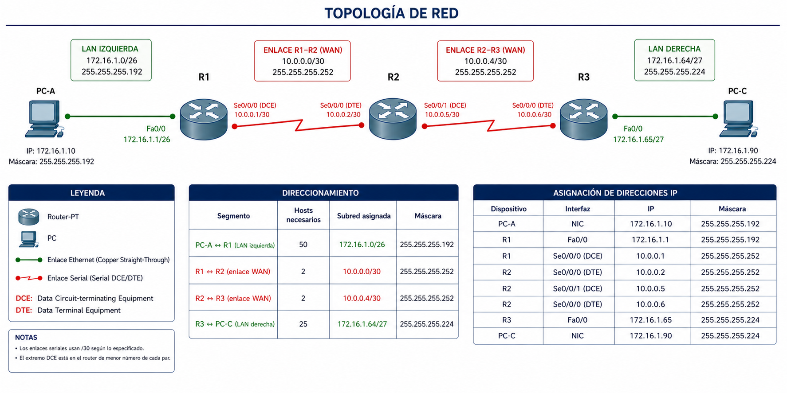

Actividad A3: RIPv1 rompe el VLSM — descubrir el classful summarization¶
- Unidad: UT6 — Enrutamiento dinámico
- Agrupamiento: parejas
- RA y CE: RA6 — Realiza tareas avanzadas de administración de red. Criterios:
- 6.4 Aplica VLSM (refuerzo por contraste)
- Recursos:
- Ficheros de trabajo:
a3_ripv1_vlsm.pkt(lo construyes tú en Packet Tracer) - Documentos que tienes que tener abiertos:
plantilla_apuntes_ut6_a3.docx— tus apuntes de A3; amplías §3.1 con la limitación classful y añades una fila a la tabla de observacionesplantilla_apuntes_ut6_a2.docx— los apuntes que entregaste en A2; los necesitas para copiar todo lo escrito hasta ahora (§1.1, §1.2, §2.1, §2.2 versión inicial, §3.1 versión inicial y la tabla de observaciones) al inicio del fichero de A3plantilla_diario_ut6_a3.docx— tu diario de aprendizaje de A3plantilla_diario_ut6_a0.docx— tu diario de A0, para consultar tus Principios de uso de IA antes de formular prompts
- Material que entregas:
a3_ripv1_vlsm.pktcon la topología construida y configuradaplantilla_apuntes_ut6_a3.docxcon todo lo de A2 copiado al inicio, más §3.1 ampliada y la fila nueva de la tablaplantilla_diario_ut6_a3.docxcon la entrada A3 rellena
Cómo trabajar en parejas¶
Este lab se realiza en parejas conductor/navegante. Vamos a leer las instrucciones antes de empezar.
Roles¶
| Rol | Qué hace |
|---|---|
| Conductor | Escribe la configuración y ejecuta los pasos en Packet Tracer. Solo el conductor toca el teclado. |
| Navegante | Lee el enunciado en voz alta, propone cambios, detecta errores y formula las preguntas al conductor. |
Rotación¶
- Vamos a cambiar de rol al final de cada fase.
- Al rotar, el navegante ocupa el teclado y el conductor se convierte en navegante.
- Ambos deben poder explicar cualquier parte del trabajo al terminar el lab.
Entrega¶
Sube a CAMPUS los tres ficheros en la misma tarea: a3_ripv1_vlsm.pkt, el documento de apuntes de A3 con la sección §3.1 ampliada y la fila nueva en la tabla de observaciones, y el diario de aprendizaje con la entrada A3 rellena.
Checkpoint de repaso¶
Antes de abrir Packet Tracer, vamos a repasar en pareja los conceptos que vamos a necesitar. Si algo no sale, podemos usar la IA como tutor de repaso — pero aplicando los principios de A0.
En A2 vimos RIPv1 funcionando limpiamente sobre una red con subredes /24 dentro de una sola clase B. Hoy vamos a usar el mismo protocolo pero con un escenario distinto: dos LAN con VLSM (máscaras /26 y /27) y enlaces serie en una clase distinta. La pregunta de la práctica es: ¿se comportará RIPv1 igual de bien?
En cuanto al uso de la IA, en A1 y A2 trabajamos la técnica #1 — pedir explicación, no solución del manual de técnicas. Hoy la seguimos aplicando: los dos prompts guiados de la Fase 2 son ejemplos de esa técnica. Repasemos el manual antes de empezar si no la tenemos fresca.
Las técnicas del manual no sustituyen los cuatro principios de A0: el prompt sigue necesitando contexto propio (P2), pedir proceso (P3) y ser verificable (P4). La técnica marca cómo formular el prompt; los principios marcan qué tiene que cumplir.
Conceptos que se trabajan en esta práctica
VLSM — reparto de subredes con máscaras de longitud variable Asignar bloques de direcciones del tamaño justo a cada segmento de red, en lugar de usar una sola máscara uniforme. Resultado: máscaras distintas conviviendo en el mismo espacio de direccionamiento. Lo vimos en la UT5.
Classful vs. classless Un protocolo classful no incluye la máscara en los anuncios de ruta: deduce la máscara a partir de la clase A/B/C de la dirección. Un protocolo classless incluye la máscara explícitamente en cada anuncio, por lo que puede transportar VLSM. RIPv1 es classful — esto ya lo vimos A2, pero en A2 no se notaba porque el direccionamiento era /24 en todas las redes.
network con dos clases distintas
Recordemos de A2: network solo acepta la dirección classful de una red completa (clase A, B o C). Si un router tiene interfaces en dos clases distintas (por ejemplo, una LAN en 172.16.x.x y un enlace serie en 10.x.x.x), necesitamos un comando network por clase: network 172.16.0.0 y network 10.0.0.0. Hoy vamos a configurar exactamente esto.
Consecuencia práctica de que RIPv1 sea classful Que RIPv1 no transporte la máscara tiene un efecto concreto sobre los diseños VLSM como el que vamos a configurar hoy. Ese efecto lo vamos a descubrir nosotros mismos en la Fase 1 mirando la tabla de rutas. En la Fase 2 le pondremos nombre técnico con la ayuda de la IA. Por ahora basta con que nos quedemos con que: RIPv1 + VLSM = problema, aunque no sepamos exactamente el motivo.
Si cuesta entender los conceptos
Abre la IA y pregúnta con prompts bien construidos. Ejemplo de prompt:
"En mi lab tengo dos LAN en los extremos con máscaras distintas (/26 y /27) ambas subredes de la red 172.16.0.0/16 (clase B). Los routers se conectan entre sí con enlaces serie /30 dentro de la red 10.0.0.0/8 (clase A). ¿Qué le pasa a las máscaras /26 y /27 cuando RIPv1 anuncia esas LAN a los routers del otro lado del enlace serie? Explícame el mecanismo paso a paso."
Ese prompt funciona porque da el escenario concreto (tu VLSM, RIPv1) y pide el mecanismo, no la solución al lab.
Topología de partida¶
Construye en Packet Tracer la siguiente topología usando routers modelo Router-PT. Guarda el fichero como a3_ripv1_vlsm.pkt.
Esta topología simula dos redes locales, una con 50 equipos y otra con 25 que están interconectadas mediante routers con enlaces punto a punto. En la topología de prueba solo se incluye un PC de ejemplo en cada LAN.

Dispositivos:
| Dispositivo | Modelo |
|---|---|
| R1, R2, R3 | Router-PT |
| PC-A, PC-C | PC |
Enlace PC-A ↔ R1 y R3 ↔ PC-C — cable cruzado (Copper Cross-Over). PC y router usan el mismo tipo de interfaz, por eso no vale el directo.
Enlaces entre routers — cable serial (Serial DCE/DTE). El extremo DCE en el router de menor número de cada par.
Direccionamiento
El lab usa dos bloques de direcciones de clases distintas a propósito: las LAN (redes con PC) se reparten con VLSM dentro de la clase B 172.16.0.0/16, y los enlaces serie entre routers son subredes de la clase A 10.0.0.0/8. Más adelante verás por qué importa que sean clases diferentes.
| Segmento | Hosts necesarios | Subred asignada | Máscara |
|---|---|---|---|
| PC-A ↔ R1 (LAN izquierda) | 50 | 172.16.1.0/26 | 255.255.255.192 |
| R1 ↔ R2 (enlace WAN) | 2 | 10.0.0.0/30 | 255.255.255.252 |
| R2 ↔ R3 (enlace WAN) | 2 | 10.0.0.4/30 | 255.255.255.252 |
| PC-C ↔ R3 (LAN derecha) | 25 | 172.16.1.64/27 | 255.255.255.224 |
Asignación de IPs:
| Interfaz | IP | Máscara | Máscara CIDR |
|---|---|---|---|
| PC-A | 172.16.1.10 | 255.255.255.192 | /26 |
| R1 Fa0/0 | 172.16.1.1 | 255.255.255.192 | /26 |
| R1 Se2/0 | 10.0.0.1 | 255.255.255.252 | /30 |
| R2 Se2/0 | 10.0.0.2 | 255.255.255.252 | /30 |
| R2 Se3/0 | 10.0.0.5 | 255.255.255.252 | /30 |
| R3 Se2/0 | 10.0.0.6 | 255.255.255.252 | /30 |
| R3 Fa0/0 | 172.16.1.65 | 255.255.255.224 | /27 |
| PC-C | 172.16.1.90 | 255.255.255.224 | /27 |
Antes de seguir: verifica que el direccionamiento funciona
Haz ping entre los extremos de cada enlace: desde PC-A hacia R1 Fa0/0 (172.16.1.1). Haz ping entre R1 Se2/0 y R2 Se2/0. Haz ping entre R2 Se3/0 y R3 Se2/0. Haz ping desde PC-C hacia R3 Fa0/0.
Con la configuración actual el ping de PC-A a PC-C todavía no funciona: aún no hay ninguna ruta que les diga a los routers cómo llegar a las redes que no tienen directamente conectadas.
Si alguno de los pings directos falla, revisa IPs y máscaras antes de continuar. No configures RIP hasta que la conectividad directa funcione.
Fase 1 — Sin IA¶
En esta fase no se usa la IA
Cierra o ignora la IA durante toda la Fase 1. Si tienes dudas, anótalas para la Fase 2. El objetivo es que te enfrentes al problema sin ayuda antes de entender el motivo de lo que ocurre.
Objetivo¶
Predecir qué tabla de rutas verá cada router cuando se active RIPv1 — y después comprobar si tu predicción era correcta.
Tarea¶
Sigue los pasos en orden.
Paso 1 — Predecir antes de configurar
Antes de escribir ningún comando RIP, recuerda lo que has leído en la comprobación: RIPv1 es classful (no envía la máscara) y eso tendrá algún efecto sobre el VLSM que acabas de configurar. Pero todavía no sabes cuál va a ser exactamente.
Anota en el diario (entrada A3, apartado "Antes de empezar (fase sin IA)", campo "Lo que predije") tu predicción eligiendo una opción en cada una de estas tres preguntas, y justificándolas en una línea:
1. ¿Qué crees que pasará con el ping PC-A → PC-C cuando RIPv1 esté activo? Marca una opción:
- (a) Llegará perfectamente, RIPv1 se las apañará para descubrir las dos LAN.
- (b) No llegará nunca, RIPv1 no podrá entregar los paquetes.
- (c) Llegará a veces, dependerá del paquete o del momento.
2. ¿Qué crees que verás para la red 172.16.0.0 en la tabla de rutas de R2? Marca una opción:
- (a) Dos entradas separadas, una para
172.16.1.0/26(vía R1) y otra para172.16.1.64/27(vía R3), cada una con su máscara real. - (b) Una sola entrada
172.16.0.0/16(la clase B completa) que abarca las dos LAN sin distinguirlas. - (c) Ninguna entrada, RIP no consigue propagar ni una de las dos LAN.
3. Justifica brevemente por qué has elegido esas opciones (1-2 líneas, basándote en lo que sabes de classful y de cómo funciona RIP).
No hay respuesta correcta todavía: la comprobación te ha dicho que algo va a fallar, pero no qué exactamente. Lo importante es que dejes por escrito tu hipótesis antes de comprobarla — luego volverás a esto en el Paso 3.
Paso 2 — Configurar RIPv1
Entra en cada router y activa RIPv1. La configuración es la misma en los tres:
Router# configure terminal
Router(config)# router rip
Router(config-router)# network 172.16.0.0
Router(config-router)# network 10.0.0.0
Router(config-router)# end
Necesitas dos network porque cada router tiene interfaces en dos clases distintas: la clase B (las LAN, 172.16.0.0/16) y la clase A (los enlaces serie, 10.0.0.0/8). Un único network activa RIP en todas las interfaces que estén dentro de esa red classful, pero no en las que pertenezcan a otra clase. Por eso hay que declarar las dos.
Paso 3 — Observar la tabla de rutas en R2
Espera unos segundos (RIP tarda hasta 30 s en converger en Packet Tracer) y ejecuta:
Deberías ver algo parecido a esto:
R2# show ip route
Codes: C - connected, S - static, R - RIP ...
Gateway of last resort is not set
10.0.0.0/30 is subnetted, 2 subnets
C 10.0.0.0 is directly connected, Serial2/0
C 10.0.0.4 is directly connected, Serial3/0
R 172.16.0.0/16 [120/1] via 10.0.0.1, 00:00:15, Serial2/0
[120/1] via 10.0.0.6, 00:00:03, Serial3/0
Compara esta salida con tu predicción del Paso 1. Anota en el diario, entrada A3, apartado «Antes de empezar (fase sin IA)», campo «Lo que vi (Paso 3)»:
- ¿Qué máscara aparece en las rutas
R? - ¿Coincide con la predicción?
Hay dos puertas de enlace distintas para redes 172.16
Fíjate que R2 tiene redes 172.16 a derecha e izquierda del mismo pero no les pone la máscara correcta.
Paso 4 — Intentar llegar de PC-A a PC-C
Lanza ping desde PC-A hacia PC-C (172.16.1.90). Anota en el diario, entrada A3, apartado «Antes de empezar (fase sin IA)», campo «Resultado del ping PC-A → PC-C (Paso 4)», si llegó y, si no, tu hipótesis de por qué.
Si no llega, intenta razonar por qué antes de pasar a la Fase siguiente. Escribe en el diario, entrada A3, apartado «Antes de empezar (fase sin IA)», campo «Dificultades que encontré»:
"El ping falla porque creo que ____. Lo deduzco viendo que en
show ip routela máscara que aparece es ____ en lugar de ____."
Anota en el diario — entrada A3, apartado «Antes de empezar (fase sin IA)» (primera tanda)
Antes de pasar a la Fase siguiente, rellena estos campos del diario:
- Lo que predije (Paso 1): qué máscaras esperabas ver en las rutas
R. - Lo que vi (Paso 3): qué apareció realmente en
show ip route. - Resultado del ping (Paso 4): llegó o no, y tu hipótesis de por qué.
- Dificultades que encontré: una por línea, lo más concreto posible.
Fase 2 — IA como tutor socrático¶
Ahora sí puedes usar la IA. Usa los prompts en orden y anota las respuestas en el diario.
Los dos prompts guiados aplican la técnica #1 del manual (la misma que ya practicaste en A1). En el Prompt 3 te toca a ti formular el tuyo.
Objetivo¶
Entender el mecanismo que explica lo que acabas de ver: por qué RIPv1 anuncia las rutas con una máscara distinta a la que configuraste.
Prompts que vas a hacer¶
No modifiques los prompts para obtener la solución directa
Si la IA te da directamente la configuración que arregla el problema, ignora esa parte. Lo que buscas es entender el mecanismo, no resolver el lab todavía.
Prompt 1 — Por qué RIPv1 anuncia esa máscara (técnica #1 del manual)
Vuelve a la tabla de rutas que anotaste en el Paso 3. La máscara que aparece en las rutas R no coincide con tu VLSM. Pregúntale a la IA:
"En Packet Tracer, tengo R1 con la interfaz Fa0/0 en la red 172.16.1.0/26 y la interfaz Se2/0 en la red 10.0.0.0/30. He activado RIPv1 con
network 172.16.0.0ynetwork 10.0.0.0. En R2, la tabla de rutas muestra la ruta hacia 172.16.0.0 con máscara /16 en lugar de /26. ¿Por qué RIPv1 anuncia esa máscara y no la que yo configuré?"
¿Tu hipótesis del Paso 4 era correcta? Anota en el diario, entrada A3, apartado «Fase 2 — IA tutor socrático», Prompt 1 (campos «Qué me devolvió la IA» y «Qué verifiqué»), qué confirmó la IA y qué te aclaró.
Prompt 2 — Cómo se llama eso técnicamente (técnica #1 del manual)
Lo que la IA acaba de explicarte tiene un nombre técnico. Pregúntale cuál es y por qué se diseñó así:
"Acabas de explicarme que RIPv1 sustituye la máscara real de mi /26 por la máscara classful /16 cuando anuncia la ruta a un vecino que está en otra clase distinta. ¿Cuál es el nombre técnico de ese comportamiento? ¿Por qué se diseñó así RIPv1 cuando se inventó?"
Anota en el diario, entrada A3, apartado «Fase 2 — IA tutor socrático», Prompt 2 (campos «Nombre técnico del comportamiento» y «Razón histórica que te dio la IA»), el nombre técnico y la razón histórica. Lo necesitarás cuando redactes §3.1 en los apuntes en la Fase 3.
Prompt 3 — El tuyo
Ya has hecho dos prompts guiados. Ahora formula uno propio sobre cualquier aspecto de la práctica que todavía no tengas claro.
Antes de escribirlo, repasa los cuatro principios de A0:
- ¿Estás pidiendo entender, no que te resuelvan algo?
- ¿Has incluido contexto de tu lab (tus subredes, tu máscara, lo que viste en
show ip route)? - ¿Pides proceso o explicación, no el resultado final?
- ¿Puedes verificar lo que te diga?
Si no tienes una duda clara, parte de alguna de estas ideas
No son los prompts "buenos" — son solo puntos de referencia para que no te quedes en blanco. Adáptalos a tu redacción y a tus datos reales antes de mandarlos.
- "¿Podría funcionar correctamente el enrutamiento si los dos enlaces serie estuvieran dentro de la misma clase B (172.16.0.0/16) que las LAN, en lugar de en 10.0.0.0/8? ¿Qué cambiaría en lo que ve R2?"
- "¿Por qué RIPv1 resume mi red a /16 exactamente y no a una máscara intermedia más cercana a mis /26 y /27?"
- "Si las dos LAN tuvieran la misma máscara (por ejemplo, las dos /24 como en A2 funcional) en lugar de /26 y /27, ¿RIPv1 podría hacerlas llegar bien? ¿Qué cambia respecto al lab de hoy?"
Anota en el diario, entrada A3, apartado «Fase 2 — IA tutor socrático», Prompt 3, el prompt que escribiste, la respuesta de la IA y qué verificaste.
Prompts buenos vs. malos para este lab¶
| Malo | Por qué falla | Bueno |
|---|---|---|
"¿qué es RIPv1?" |
Genérico, respuesta de Wikipedia. | "Tengo RIPv1 activo en 3 routers con VLSM /26 y /27 en el mismo espacio 172.16.0.0/16. ¿Por qué R2 ve /16 en lugar de mis máscaras reales?" |
"¿cómo configuro RIP?" |
Pide receta, no comprensión. | "¿Por quénetwork 172.16.0.0activa RIP en todas mis interfaces si tienen máscaras distintas?" |
"explícame el classful summarization" |
Sin contexto propio. | "RIPv1 me ha anunciado 172.16.0.0/16 desde R1. Mi interfaz en R1 es 172.16.1.0/26. ¿Es eso el classful summarization? ¿Qué límite cruzó para resumir así?" |
Verifica lo que te diga la IA
Si la IA menciona comandos o comportamientos concretos de IOS (como versiones de RIP, valores de temporizadores, o comportamiento del summarization), contrástalo con lo que observaste en tu tabla de rutas real. Anota en el diario, entrada A3, apartado «Errores que detecté en respuestas de la IA», cualquier discrepancia.
Anota en el diario — Fase 2
Rellena en tu diario (entrada A3, apartado "Prompts que usé"):
- Los dos prompts guiados con tus valores reales sustituidos. Los dos aplican la técnica #1 del manual.
- El Prompt 3 que construiste tú. Indica qué principio de A0 fue el más importante para formularlo (P1 entender, P2 contexto, P3 proceso, P4 verificable).
- Qué te devolvió la IA en cada uno (una línea por prompt).
- Qué parte de cada respuesta verificaste y cómo.
Fase 3 — Ejecución supervisada¶
Objetivo¶
Confirmar en Packet Tracer lo que acabas de entender: que RIPv1 no es capaz de gestionar redes que usen VLSM, documentar exactamente qué deja de funcionar y qué necesitaría el diseño para evitarlo.
Tarea¶
Paso 5 — Verificar con show ip route en los tres routers
Ejecuta show ip route en R1, R2 y R3. Para cada router, rellena en el diario, entrada A3, apartado «Antes de empezar (fase sin IA)», campo «Tabla de rutas R en los tres routers (Paso 5)», la fila correspondiente de esta tabla:
| Router | Ruta R para 172.16.0.0 (red, máscara, vía, métrica) |
¿Aparecen las LAN remotas con su máscara real (/26, /27)? |
|---|---|---|
| R1 | ||
| R2 | ||
| R3 |
Cómo rellenar la celda del medio — copia la red y máscara tal cual aparece en
show ip route(por ejemplo172.16.0.0/16), seguida del siguiente salto y la interfaz (vía 10.0.0.1, Serial2/0) y la métrica entre corchetes ([120/1]). Si en un router hay más de un siguiente salto para la misma red, escríbelos los dos en la misma celda separados con punto y coma. En la columna de la derecha basta con Sí/No y una observación corta tipo "solo aparece la /16 resumida".
En los tres routers verás algo parecido: una única entrada R 172.16.0.0/16 que apunta hacia el vecino correspondiente. Las máscaras /26 y /27 que tú configuraste han desaparecido. Lo que cada router conoce es una red gigante (172.16.0.0/16 entera) que él mismo no sabe cómo está dividida realmente.
Paso 6 — Comprobar que las LAN reales no aparecen en R2
Comando nuevo: show ip route <dirección IP>
Hasta ahora has usado show ip route sin parámetros, que muestra la tabla completa. Si añades una IP detrás (show ip route 172.16.1.90), el router te dice qué entrada de su tabla coincide con esa dirección y por qué interfaz la enviaría — o % Subnet not in table si no tiene ninguna ruta que la cubra. Es la forma de preguntarle a un router "si te llegara un paquete para esta IP, ¿cómo lo encaminarías?". Lo vas a usar tres veces en este Paso 6 y en el Paso 7.
Desde R2 ejecuta:
y también:
¿Devuelve alguna ruta concreta para esas redes, o solo te muestra la entrada genérica /16? Anota la respuesta en el diario, entrada A3, apartado «Antes de empezar (fase sin IA)», campo «Comprobación en R2 (Paso 6)».
Lo que estás comprobando es esto: para R2, las dos LAN distintas (la /26 con PC-A y la /27 con PC-C) son indistinguibles. Las dos entran dentro del mismo 172.16.0.0/16 que ha aprendido por RIP. R2 no tiene forma de saber que una está al otro lado de R1 y la otra al otro lado de R3.
Paso 7 — ¿Por qué falla el ping y qué tendría que cambiar?
Con lo que has visto en los pasos anteriores ya tienes la primera mitad de la respuesta: para R2 las dos LAN son indistinguibles, y reparte los paquetes hacia 172.16.1.90 entre R1 y R3 a ciegas (su tabla muestra dos rutas R 172.16.0.0/16 con la misma métrica). Pero eso solo dice que R2 manda paquetes "al azar" — no explica por qué ninguno llega a PC-C.
Antes de escribir la frase, haz dos comprobaciones que te enseñan qué pasa cuando R2 envía un paquete a R1:
- En R1: ejecuta
R1# show ip route 172.16.1.90y revisa la fila de R1 que rellenaste en la tabla del Paso 5. ¿Tiene R1 alguna ruta capaz de entregar un paquete para PC-C? ¿Aparece la /27 de PC-C en su tabla? - Desde PC-A: lanza
tracert 172.16.1.90y observa la lista de saltos. ¿En qué router se queda atascado el paquete? ¿Coincide con lo que has deducido de R1?
Anota en el diario, entrada A3, apartado «Antes de empezar (fase sin IA)», campo «Por qué falla el ping (Paso 7)», la frase con los dos huecos rellenos:
"El ping falla porque cuando un paquete para 172.16.1.90 le llega a R1, R1 ____. La causa de fondo es que R1 nunca aprendió la /27 de PC-C: cuando R2 le anuncia
172.16.0.0/16por el enlace serie, RIPv1 no instala ese resumen en su tabla porque ____."
Pista para cerrar el segundo hueco
RIPv1 funciona así: si un router ya está físicamente dentro de una red mayor (R1 lo está, porque su Fa0/0 vive en 172.16.1.0/26, dentro de 172.16.0.0/16), no acepta de fuera anuncios resumidos de esa misma red mayor. Por eso R1 ignora la R 172.16.0.0/16 que le llega de R2 y se queda solo con su /26 conectada.
Si te queda tiempo: ¿y los paquetes que R2 manda vía R3?
Como R2 tiene dos rutas con la misma métrica, la mitad de los paquetes para 172.16.1.90 pueden salir vía R3 (no vía R1). Por la rama de R3, el paquete sí llega a PC-C — R3 tiene la /27 conectada. Pero cuando PC-C contesta, la respuesta llega a R3 y... R3 tiene exactamente el mismo problema que R1: no conoce la /26 de PC-A (ignoró el resumen 172.16.0.0/16 por la misma regla), así que descarta la respuesta. Compruébalo con R3# show ip route 172.16.1.10.
Conclusión: incluso por el enlace "bueno" la conectividad falla, porque el camino de vuelta también está mal definido. Cuando RIPv1 se usa en redes con VLSM, todas las rutas terminan dejando de funcionar en algún punto.
Y para cerrar:
"Para que RIPv1 funcionara con este direccionamiento, las dos LAN tendrían que estar en clases distintas (cada una en su propia red mayor) o tener todas la misma máscara dentro de la misma clase B. Es justo lo contrario de lo que aporta el VLSM."
Este razonamiento conecta el problema de RIPv1 con la razón por la que los protocolos modernos (RIPv2, OSPF) son classless.
Anota en el diario — entrada A3, apartado «Antes de empezar (fase sin IA)» (segunda tanda)
Estos son los campos del diario que cierras en la Fase 3 (los anteriores ya los tenías rellenos desde la Fase 1):
- Tabla de rutas R en los tres routers (Paso 5): la fila de R1, R2 y R3 con el formato indicado arriba.
- Comprobación en R2 (Paso 6): qué devuelven
show ip route 172.16.1.0yshow ip route 172.16.1.64. - Por qué falla el ping (Paso 7): la frase con los dos huecos cerrada a partir de tus observaciones de
show ip route 172.16.1.90en R1 y deltracert 172.16.1.90desde PC-A.
Paso 8 — Arrancar el fichero de apuntes A3 y ampliar la tabla
Abre plantilla_apuntes_ut6_a3.docx. La plantilla viene con espacio para la ampliación de §3.1 y para la fila nueva de la tabla de observaciones. Antes de rellenarlas, copia al inicio de este fichero todo el contenido de tu plantilla_apuntes_ut6_a2.docx: §1.1, §1.2, §2.1, §2.2 versión inicial, §3.1 versión inicial y la tabla de observaciones (con las columnas Estático y RIPv1 ya rellenas en A2). Al final de la unidad tendrás un único fichero (el de A6) con todas las secciones acumuladas.
La tabla de observaciones que has copiado de A2 tiene dos filas (escalabilidad y convergencia) con dos columnas (Estático y RIPv1). En A3 le añades una fila nueva: Compatibilidad con VLSM. La tabla queda así:
| Criterio | Estático | RIPv1 |
|---|---|---|
| Escalabilidad — qué pasa cuando la red crece | (lo que escribiste en A1) | (lo que escribiste en A2) |
| Convergencia — cuánto tarda la red en recuperarse | (lo que escribiste en A1) | (lo que escribiste en A2) |
| Compatibilidad con VLSM | Compatible (transporta la máscara que configuras) | Incompatible — resume a classful al cruzar el límite de clase |
La fila nueva de Compatibilidad con VLSM ya tiene contenido sugerido — reescríbela con tus palabras y conectándola con tu lab antes de aceptarla. Más adelante, en A4 y A5, ampliarás la tabla con una columna nueva por cada protocolo (RIPv2 y OSPF).
Anota en los apuntes — tras la Fase 3
Rellena estas secciones en tu documento de apuntes (plantilla_apuntes_ut6_a3.docx):
§3.1 — RIPv1 y sus límites (ampliación, máx. 100 palabras adicionales) En A2 escribiste cómo funciona RIPv1 cuando todo va bien. Ahora añades debajo la limitación que has descubierto hoy: el classful summarization. Explica con tus palabras qué pasa cuando un anuncio cruza el límite de clase, por qué eso destruye un VLSM, y pon un ejemplo numérico tomado de tu lab (172.16.1.0/26 → /16 al cruzar a 10.0.0.0/8). No copies de la IA: la consigna pide tu escenario.
Importante: no reescribas lo que ya tenías en §3.1 de A2 (cómo funciona RIPv1). Lo que haces es añadir un párrafo nuevo que empieza con algo como "Sin embargo, cuando se intenta usar RIPv1 con VLSM…" o "Esta forma de funcionar tiene un límite: el classful summarization…".
Entrada A3 del diario de aprendizaje¶
Esta sección resume lo que tienes que tener relleno en el diario al terminar la actividad.
Fase sin IA¶
- Lo que predijiste (Paso 1): qué pensabas que iba a pasar con el ping y con la tabla de rutas, y por qué.
- Lo que viste (Paso 3): la salida real de
show ip routeen R2. - Resultado del ping PC-A → PC-C y tu hipótesis de por qué falló.
- Tabla del Paso 5 con la ruta
Rque aparece en R1, R2 y R3. - Razonamiento del Paso 7 sobre por qué R2 no puede entregar el paquete a PC-C.
- Dificultades o bloqueos que tuviste.
Prompts que usé y por qué los formulé así¶
Los tres prompts literales (con tus datos reales). Los dos guiados aplican la técnica #1 del manual; en el Prompt 3 (el tuyo) indica qué principio de A0 te guio. Para cada uno, qué te devolvió la IA y qué verificaste.
Errores que detecté en respuestas de la IA¶
Si la IA te dijo algo incorrecto (un valor equivocado, un comando inexistente, una explicación al revés), anótalo:
- Qué dijo la IA.
- Qué comprobaste.
- Por qué crees que se equivocó.
Si no detectaste ningún error, escribe: "No detecté errores en las respuestas, pero debo reconocer que no las verifiqué a fondo en: ____."
Reflexión final¶
Al terminar A3 deberías poder decir...
- Sé qué es el classful summarization y por qué ocurre: lo he visto en mi propia tabla de rutas, donde mis dos LAN /26 y /27 han desaparecido tras una única entrada
R 172.16.0.0/16. - Entiendo por qué un diseño VLSM y un protocolo classful como RIPv1 son incompatibles: uno asume máscaras variables, el otro las ignora al cruzar el límite de clase.
- Sé explicar por qué falla el ping entre las dos LAN y por qué tener dos rutas idénticas hacia el mismo destino con varios siguientes saltos es un problema cuando las redes son distintas pero el protocolo no las distingue.
- He ampliado §3.1 de mis apuntes con la limitación classful, sobre la base de lo que ya escribí en A2.
- He registrado en el diario los prompts que hice, cómo los formulé y qué verifiqué.
Checklist de entrega¶
- He configurado el direccionamiento (LAN en clase B, enlaces serie en clase A) en los tres routers y verificado la conectividad directa.
- He escrito mi predicción antes de configurar RIPv1 y la he comparado con lo que vi.
- He ejecutado
show ip routeen R2 y anotado la entradaR 172.16.0.0/16con sus dos siguientes saltos. - He completado la tabla del Paso 5 con la ruta
Rque aparece en R1, R2 y R3. - He comprobado en R2 que las redes /26 y /27 no aparecen como entradas separadas (Paso 6).
- He razonado por escrito por qué falla el ping PC-A → PC-C (Paso 7).
- He hecho los dos prompts guiados de la Fase 2 con mis datos reales y formulado el Prompt 3 propio. Todo anotado en el diario.
- He copiado al inicio de
plantilla_apuntes_ut6_a3.docxtodo el contenido de A2 (§1.1, §1.2, §2.1, §2.2 versión inicial, §3.1 versión inicial y la tabla con dos columnas). - He ampliado §3.1 con la limitación classful, usando mis subredes reales como ejemplo.
- He añadido la fila Compatibilidad con VLSM a la tabla de observaciones.
- He rellenado la entrada A3 del diario: fase sin IA + prompts (con técnica del manual aplicada en cada uno) + errores detectados.
- Subo a CAMPUS:
a3_ripv1_vlsm.pkt+plantilla_apuntes_ut6_a3.docx+plantilla_diario_ut6_a3.docx.